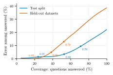
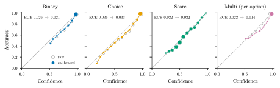

A yes that knows how sure it is
Most of the questions I want software to answer about text are small. Is this email a complaint? Which team should get this ticket? Does this review mention delivery? Is this retrieved passage relevant to the question?
A plain "yes" or "billing" isn't enough for any of them. I also want to know how likely the answer is to be right, because that decides what happens next: act on it, or pass it to a person.
What calibrated means
A model is calibrated when its confidence matches how often it's right. Take every answer it gives with 80% confidence, and about 80% of them should be correct. Take the ones at 95%, and about 95% should be.
That sounds obvious, but most models don't do it out of the box. Neural classifiers tend to be overconfident. Asking a chat model to "rate your confidence from 0 to 100" gives you a number, but not one that matches how often it's actually right. If the number doesn't mean anything, you can't set a rule on it.
The usual measure is expected calibration error (ECE): group answers by confidence and average the gap between confidence and accuracy in each group. Lower is better, and zero means the confidence is exactly right.
Why it matters more than accuracy
Accuracy is one number for the whole dataset. In practice, you rarely have to answer everything. If the confidence is honest, you can let the model handle the answers it's sure about and send the rest to a person.
Here is what that looks like with WaterSheep, the decision model I've been building. On its test split it's right 77.8% of the time when it answers everything. Set a confidence threshold and it answers fewer questions, with far fewer mistakes:
| Only answer above | Questions answered | Error rate |
|---|---|---|
| no threshold | 100% | 22.2% |
| 0.70 | 71% | 9.5% |
| 0.90 | 53% | 3.4% |
| 0.95 | 41% | 1.8% |
The same holds on datasets it never saw in training, which is the harder test. Overall accuracy there is 61.2%, but at a 0.90 threshold it answers 38% of the questions with a 4.9% error rate.

So a model that's only right 61% of the time overall can still take over a third of the work almost without mistakes. That only works because the confidence is honest: WaterSheep's ECE is 0.026 on the test split and 0.043 on the held-out datasets.
How it's done
WaterSheep reads the text and the question together in one encoder pass and scores every option. Then a small calibration step, fitted on held-out answers for each question type, maps the raw scores to probabilities that match the observed accuracy.

Using it
Every answer comes with a probability for each option, so the threshold rule is one line:
from transformers import pipeline
ws = pipeline(model="samratduttaofficial/WaterSheep", trust_remote_code=True)
a = ws("The parcel arrived broken and nobody answers the phone.",
question="Is this a complaint?")
if a["p_yes"] >= 0.9:
handle_complaint()
elif a["p_yes"] <= 0.1:
archive()
else:
send_to_a_person()
It also runs as a local server (watersheep --serve), and there are LangChain and LlamaIndex
integrations. The LlamaIndex one drops retrieved passages the model judges irrelevant, using the same
probability as the cut-off.
Where it falls short
It's English only, long inputs are truncated, rating questions are its weakest type, and some datasets are hard for it (GoEmotions is 22%). Calibration also tells you when it's unsure; it doesn't make it right. It shouldn't make high-stakes decisions on its own.
The code, weights and training pipeline are open under Apache 2.0. You can try it in the browser, or read the code on GitHub. I'd like to hear where it fails on your data.